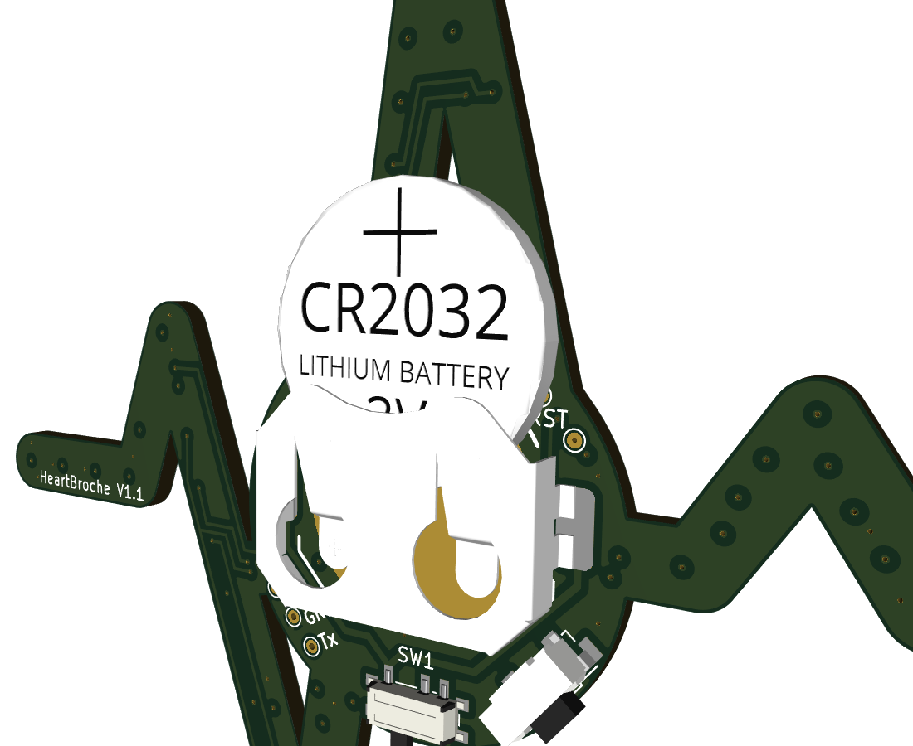
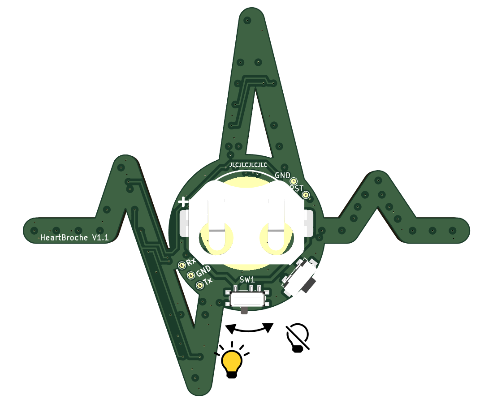
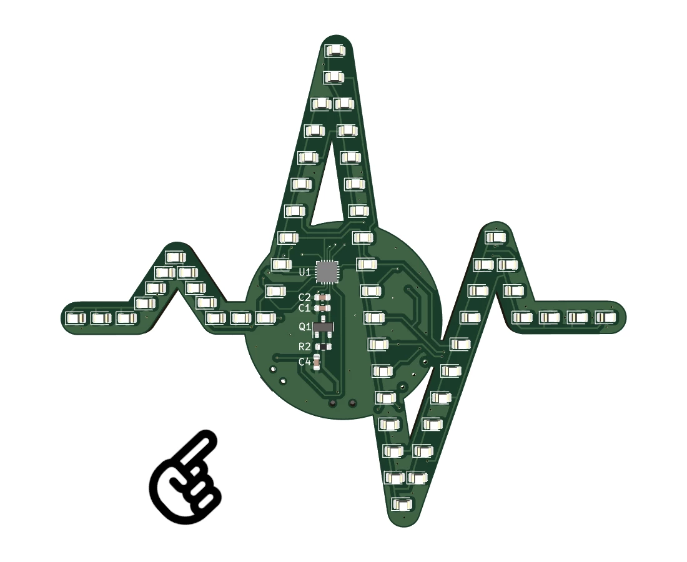

Documentation
One brooch to beat them all
- Doc Version: 1.0
- Hardware version: 1.1
- Author: Bram den Ouden
- Created: 14 September, 2023
- Update: 14 September, 2023
First use
So you've just received your HeartBroche and want to use it? Follow these steps:
- The HeartBroche comes in a ziplog bag on which you found a link or QR code to this manual. Take the brooch and any accesories you got with it out of the bag.
- Check if the CR2032 battery is inserted the right way. The positive terminal should be facing away from the brooch. 
- Check if the switch on the bottom side of the HeartBroche is turned on. The on position is indicated in the figure below. 
- When the battery is inserted and the brooch is turned on, a led will start running across the brooch as if it were an ECG recording. This animation will repeat itself every 3 seconds.
- You can now attach the brooch to your clothing using the included magnet or (safety)
pin.
you have a pacemaker or other device sensitive to magnetic fields, do not use a magnet to attach the brooch to your clothing.
- To turn the Heartbroche off when you're done, simply switch the slider to the off position.
{kind=link}
{kind=link}
Animations
Since each LED of the brooch can be controlled individually it can also show simple animations. When turning the brooch on, the default animation, called "Beat", will play. To switch between the different animations, press the button at the bottom of the brooch. While you hold the button, the LEDs indicate which animation you've selected, release and press again to go to the next animation: When the first animation is selected, only the first LED will be on, second animation means 2 LEDs are on and this continues until 5 LEDs are on. To cycle back to earlier animations, keep pressing the button until you start again at the first animation. To confirm the selected animation, stop pressing the button. After 1 second, the selected animation will start. The 5 different animations which are currently implemented are:
{kind=link}
- Beat This animation lets a single light run across all LEDs to emulate the recording of an ECG trace. After the light has reached the last LED, it takes 3 seconds for the next light to start running.
- Twinkle This animation randomly blinks a few LEDs causing a twinkling animation.
- Snake The snake animation closely resembles the beat with the difference that multiple light will slowly run across the LEDs. In addition some LEDs around the snake may twinkle
- Solid This will turn all LEDs on at a lower intensity.
- Segment The segment animation will step through all LEDs 3 or 4 at a time. It is a more relaxed alternative to the snake animation.